NOISE REDUCTION using Fuzzy Filtering
Images are ubiquitous in the modern digital world. We share images on
Social Networks, save them online and almost every website uses them. Transmission,
compression and editing of images often results in artifacts and noise in
images. Image Noise results in decrease of quality of the image and is
considered undesirable.
Image noise is random (not present in the original object imaged) variation of
brightness or color information in images. It originates due to extra
information added in the image wherever a lack of information exists. For
example, a low light photo often contains color noise in dark regions.
Image Noise can be of several types:
· Gaussian Noise
It arises during image capture in
poorly illuminated conditions
· Salt-and-pepper noise
Sparsely distributed bright pixels. Caused due to conversion or transmission
error
· Uniform noise
Caused by quantization of pixels of captured image. It has uniform distribution
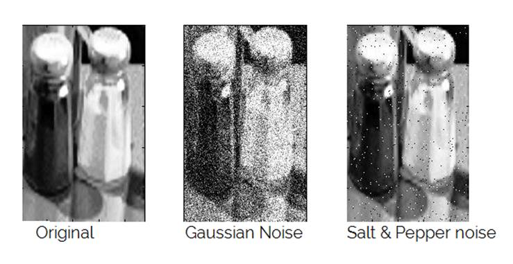
Here, we develop a fuzzy logic based technique to remove additive noise from a color image. Common noise reduction techniques like mean or median lead to loss of edge information in the image. We develop an edge sensitive technique that preserves edges based on “fuzzy difference” in various directions. Fuzzy rules based on local neighborhood of pixel are formulated. Various membership functions like small, positive and negative are used in the rules. The small membership function is optimized based on the current image and allows for multiple iterations of noise reduction on a given image.
Overview of Fuzzy Filtering technique
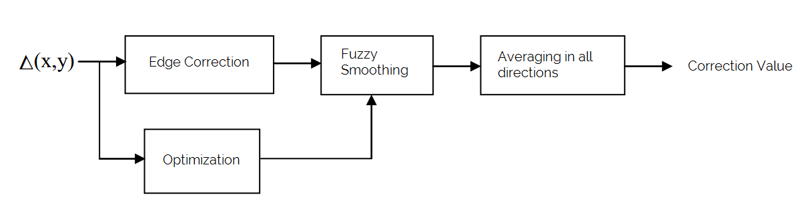
Δ( x ,
y ) represents the difference in luma value of a pixel and its neighbor.
The value is used to detect edges in a certain direction of the pixel. Then
Fuzzy Smoothing is done to average out the pixel value based on its neighbors.
The amount of averaging depends on the optimization carried out earlier which
determines the spread of membership function small. The Fuzzy smoothing
is done in all 8 directions and the average is taken to compute the correction
term. The correction value is added to the original pixel value.
Edge Correction
The first step for removing noise effectively is to detect which
directions have edges near the pixel being processed (assumed to be at (x,y) ).
We consider a 3x3 block of pixels with (x,y) pixel being at the center of the
block. Then we find the difference in luma value ( Δ( x , y ) ) in all 8
possible directions, namely, N,S,E,W,NE,NW,SE,SW.
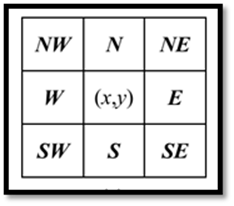Δ N ( x , y ) = ( V( x , y-1 ) )- ( V( x , y ) )
Δ S ( x , y ) = ( V( x , y+1 ) )- ( V( x , y ) )
Δ NE ( x , y ) = ( V( x+1 , y-1 ) )- ( V( x , y ) )
And so on…
However, if we add the average of the difference values, we simply get a mean filter without edge preservation.
To preserve edges, we make the following observation:
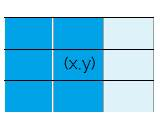
Consider
the image shown. Here, the first 2 columns of the 3x3 block represent a dark edge.
We notice that the pixels in NE,E and SE direction
have a large Δ( x , y ). These will contribute largely to the correction
value but for edge preservation they must be ignored.
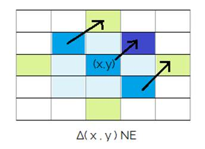
We detect edges by comparing the Δ( x , y ) for other neighboring pixels in a direction perpendicular to the correction direction. Eg. for the NE direction, we take pixels along the NW diagonal and find their ΔNE( x , y ).
We find, d1=ΔNE( x , y ), d2= ΔNE( x-1 ,
y-1 ), d3= ΔNE( x+1 , y+1 ).
Now, of any two of the three or even all three are small, we can assume that there is no edge in the given direction and its correction value i.e. ΔNE( x , y ) should be added to the final correction value. If edge is present, then only a very small(or nil) fraction of the correction must be added to final correction.
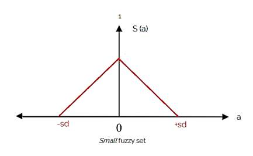
Now we define the difference to be small using a fuzzy set.
S(a) = 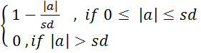
Here, sd
is the minimum standard deviation of all 8x8 blocks of the image.
This is the optimization parameter decided in the Optimization stage.
Hence, to take all three difference d1,d2,d3 to be small, we can write the fuzzy rule:
“ IF d1 is small and d2 is small and d3 is small THEN ΔM D ( x , y ) is small ”
Where d1,
d2, d3 are the ΔD( x , y ) of pixels present perpendicular to D and
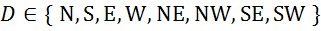
This rule
is applied for all D in the set i.e. 8 directions and membership grade of
ΔMD( x , y ) is calculated in the set small.
Optimization (finding sd)
The value of sd determines the spread of the MF small and ultimately the threshold for edge detection. Instead of sampling the whole image for standard deviation, we take K x K blocks of the image and find their Standard Deviation. Then we take the minimum Standard Deviation across all blocks. This gives us a measure of the minimum amount of variation in luma values present in an almost smooth K x K block in the image. Currently, we choose K=8 for reasonable efficiency.
This
minimum devation sd will always be less than the deviation in
case of an edge.
Finally, we multiply Standard Deviation by a amplification parameter a
to increase noise reduction.
sd = a* Standard Deviation
For successive iterations, the sd is calculated again.
Fuzzy Smoothing
The
previously calculated membership grade of ΔMD( x , y ) is used
to find how influential the difference of value in a direction must be in
calculation of final corrected value. The greater the membership grade, the
greater fraction of difference is added.
Hence, if no edge is present in a direction, then the difference of pixel value
in its perpendicular direction should be added to final correction.
CD (x,y) = ΔMD( x , y )* ΔD( x , y )
Here, CD (x,y) is the correction component of direction D and is a fraction of ΔD( x , y )
The same
can be represented using fuzzy rules and membership functions:
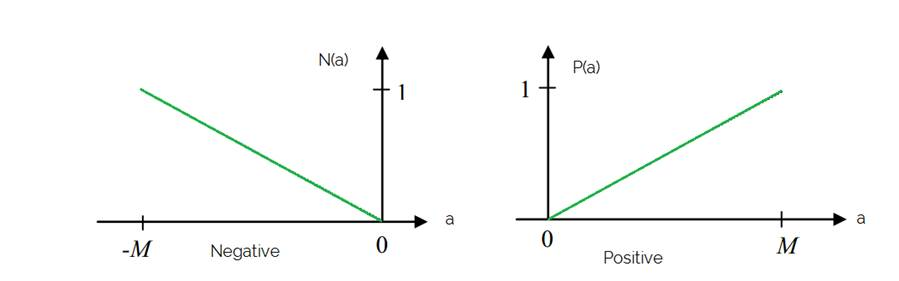
The positive
MF is linear from [0 M] and negative ranges from [-M 0]
Here, M is the maximum value of luma value.
We can specify the following fuzzy rules to obtain the final correction for a direction:
CDp = IF ΔMD(
x , y ) is small and ΔD( x , y ) is positive THEN CDp is
positive
CDn = IF ΔMD( x , y ) is small and ΔD( x , y ) is negative THEN CDn is negative
Here, CDp
is the positive correction output term and CDn is the negative
correction output term. Only one of them is non-zero at a time. The minimum of
membership grade of MF small and MF positive/negative is taken in
final output.
Eg. for N direction, we get CNn and CNp outputs.
Averaging In all Directions
After obtaining CDp and CDn for all directions, we can average their value to obtain final correction.
ΔC(x,y) = (CDp - CDn)/8
Where directions= 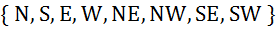
Hence, we obtain the correction term with contribution from only those directions which do not have an edge going through its perpendicular direction.
RESULTS and Conclusion
We compare the results of the algorithm implemented in MATLAB with simple techniques for various types of noise.
Gaussian Noise
Gaussian Noise : 15% Fuzzy Filtered with a=6
Comparison with Mean and Median
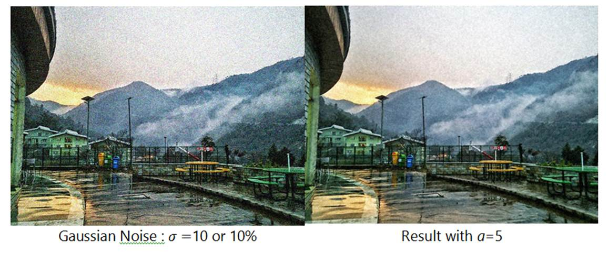
We can notice reduction in colour noise in the sky. Edges and details are well retained.
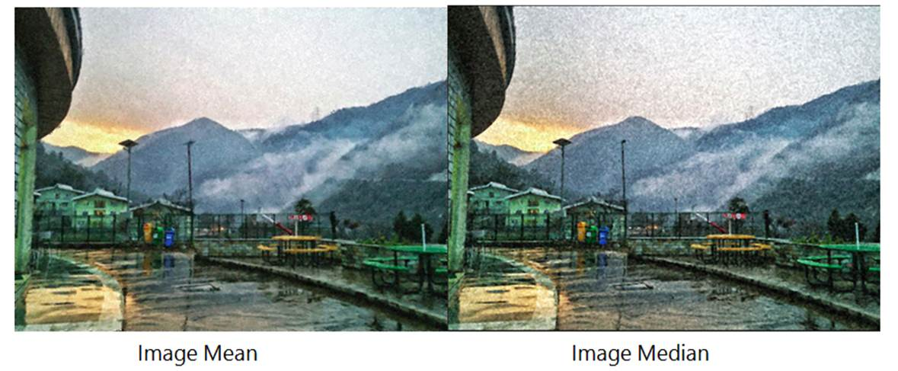
Fuzzy filtering is far superior to Median. However, Mean Filter is quite close in noise reduction but Fuzzy Filtering shows better edge details.
Uniform Noise

Uniform Noise = 10% Fuzzy Filtered, a=5
We can notice the significant reduction in noise in the sky and mountain region. Edges are reasonably preserved as well.
Fuzzy Filtered, a=5 Mean Filter
Better noise reduction and edge preservation than mean filter.

Fuzzy Filtered, a=5 Median Filter
Significant improvement over result from Median Filter.
Uniform Noise = 5% Fuzzy Filtered, a=5
For low amount of uniform noise, Fuzzy filtering removes almost all noise with little loss of details.
Conclusion
We observe
that Fuzzy Filtering method works best for both Gaussian and Normal noise. The
conventional mean and median methods lead to loss of edge data in the image. By
tuning the amplification factor, a, we can intensify the
smoothing process while preserving the edges.
The use of fuzzy difference to detect edges and subsequently ignore the related
neighbors leads to edge preservation and efficiently reduces noise. Hence,
fuzzy logic is effectively used to reduce noise in images and improve their
quality.
REFERENCES
The
following online sources/papers were referred to for this technique:
1.
Image Noise:
http://www.cambridgeincolour.com/tutorials/image-noise.htm
2.
Image Noise details :
https://en.wikipedia.org/wiki/Image_noise
3.
MATLAB fuzzy toolbox :
http://in.mathworks.com/help/fuzzy/mamdani-fuzzy-inference-systems.html
4.
Color Space and Conversion:
https://en.wikipedia.org/wiki/HSL_and_HSV
5. Image Enhancement theory : http://tizhoosh.uwaterloo.ca/Fuzzy_Image_Processing/ImageEnhancement.htm
6. Paper: Noise reduction by fuzzy image filtering , D. Van De Ville
http://ieeexplore.ieee.org/xpls/abs_all.jsp?arnumber=1220289
7. Paper: Fuzzy filters for noisy image, H. K. Kwan http://ieeexplore.ieee.org/xpls/abs_all.jsp?arnumber=1205798
8. A fuzzy filter for images corrupted by impulse noise,” IEEE Signal Processing Lett., vol. 3, pp. 168–170, June 1996
9. A fuzzy operator for the enhancement of blurred and noisy images,” IEEE Trans. Image Processing , vol. 4, pp. 1169–1174, Aug. 1995
Fuzzy Edge Detection in Images
Edge Detection is a popular problem in the domain of Image Processing and has wide applications in field like Computer Vision, Robotics, Artificial Intelligence and so on. It is one of the tasks which do not have deterministic algorithms that can be applied to all kinds of images, but requires selective adoption of certain methods that prove to be especially effective. This paper intends to apply two methods, one in the crisp domain and one in the fuzzy domain, to actual images, using MATLAB, and compare their effectiveness.
Principle : All edges in an image share a common property. They show a sharp change in the colour intensity across them. This property is exploited to indicate potential edges in an image.
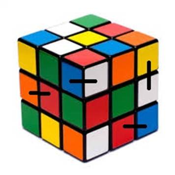
The dark black lines connect regions with contrastive colours
Let us go down to the pixel level. Given below are two sample sub matrices of size 3 X 3 from the image.
A = [ 121 120 118 B = [ 0 0 120
123 119 121 240 0 0
121 121 121 ] 238 0 0 ]
Considering sub-matrix A, we can see that all of the values more or less lie around 120. This uniform distribution of pixel values indicate a uniform coloured region in the image.
On the other hand, the sub-matrix B shows a distinctive change of values from the bottom left corner (around 240) to 0 in the middle to around 120 at the top right corner. Since 0 indicates absence of colour or black, the band of zeros in the middle of the matrix means a black edge between two colours on either side.
The following section describes the two methods implemented by our group :
Crisp Technique
We prepares a list of difference values w.r.t to the central pixel. The edge detection algorithm then decides whether this pixel is a part of an edge or not by using a threshold value T.
Threshold value – As we all know, pixel values range between 0 to 255 for any of the R, G, or B components of a coloured image or the greyness of a grayscale image.
Thus we define a threshold value T, T belongs to [0, 255], such that a pixel P will be considered an edge only if
| P – surrounding pixels | > T
If there exist any value in the difference table that is greater than T, we mark that pixel as being part of the edge boundary. Note that even if a single surrounding pixel deviates more than T from the central value, the pixel will be marked as an edge. In short, this method does not do the overall analysis of all the surrounding pixels.
2.4
Effect of varying threshold values
Let us see the effect of different values of T on this algorithm. When the value of T is small, even smaller variations in the pixel values creates lots of stray edges in the resulting image.
Result with T = 1 Result with T = 10
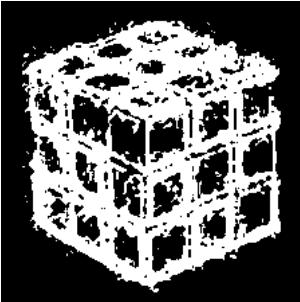
Now if the value of T is set to be very large, only
the most significant edges will be highlighted, and some less important edges
will be neglected. However, this may cause some important edges too to get
eliminated.
Result with T = 25 Result with T = 50
As we can see, a very high threshold value can lead to loss of vital information, whereas a very low value can result in erroneous edges being produces in the final image.
Fuzzy Analysis
This method also analyses all the pixels in the image, however takes into consideration the effect of all the surrounding pixels.
In this method, we define a parameter, called the degree of edgeness, for each pixel. We consider the
entire image matrix as a fuzzy set, and define the membership grade for each
pixel in the image. The membership function is as follows :

Where,
g(x,y) : The pixel under consideration
g(i,j) : The surrounding pixels
 : Normalising value
: Normalising value
After calculating the membership grade for all the pixels, we again define the threshold value. In this case however, the threshold value lies in the range [0,1]. We mark a pixel as the part of an edge if, Membership grade (Pixel) > T
Let us see the results produced by this algorithm :
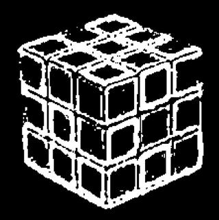
Fuzzy Edge Detection with T = 0.5
When the values of T are
varied, similar trends as in the case of Crisp Edge Detection are observed i.e.
no. of edges marked varies inversely with the threshold value.
Results
After applying both the methods to a common image for
different values of threshold, the Fuzzy method produced better results than
the Crisp method. Both the images have been concatenated to show the
difference, as shown below.
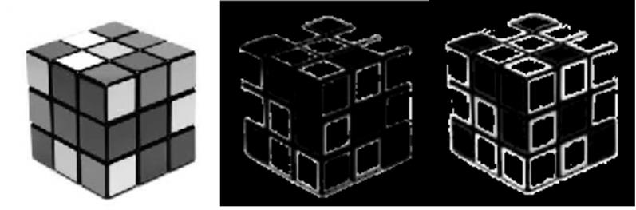
1st image : Original grayscale image
2nd image : Edge detection by Crisp method
3rd image : Edge detection by Fuzzy method
Coloured Boundaries
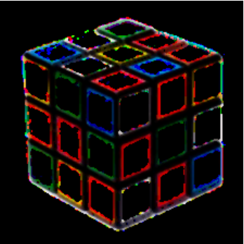
Crisp Method (T = 5) Fuzzy Method (T = 0.5)
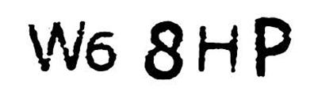
Original Image Fuzzy
Edge detection
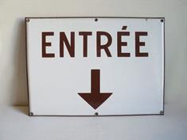 .
Original Image Edges
Detected
References
· http://in.mathworks.com – The official documentation page for MATLAB.
· http://tizhoosh.uwaterloo.ca – The official page of the University of Waterloo, California
· 2010 International Journal of Computer Applications (0975 - 8887)
Volume 1 – No. 22
· L.R. Liang, C.G. Looney / Applied Soft Computing 3 (2003) 123–137
· http://ieeexplore.ieee.org – The Official Website for IEEE.